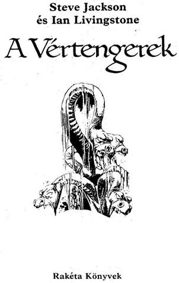
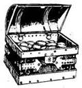
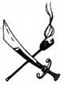
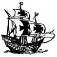
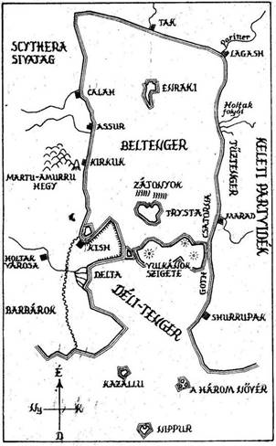
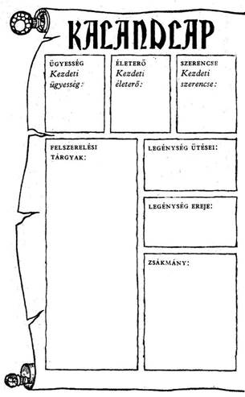
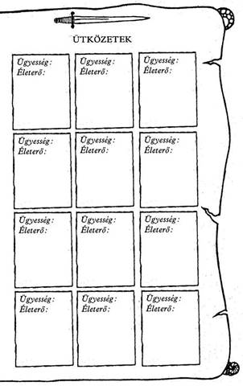

Steve Jackson and lan Livingstone
Seas of Blood
Concept copyright © Steve Jackson
and lan Livingstone, 1985
Text copyright © Andrew Chapman, 1985
Illustrations copyright © Bob Harvey, 1985
All rights reserved
Fordította
Varsányi Mária
Bob Harvey illusztrációival
© Steve Jackson and lan Livingstone, 1985
© Hungarian transiation Varsányi Mária, 1990
Előszó
A Kísértet nevű kalózhajó kapitánya vagy. Tapasztalt gyilkos bandáddal végig kell tarolnod a Beltenger partvidékét, hogy legnagyobb riválisoddal, Abdullal, a Mészárossal folytatott versenyedben elegendő aranyat és foglyot ejthess. Mindketten esküdt ellenségei vagytok a civilizált világnak, és úgy tartanak számon benneteket mint a legnagyobb kalózkapitányokat.
Most mégis versenyezned kell vele, hogy kiderüljön, melyikőtök a legnagyobb kalóz.
Mielőtt útra kelnél, meg kell győződnöd róla, hogy milyen erős vagy te magad és milyen kitartó hajód legénysége. Ehhez csak két dobókockára, egy ceruzára és egy radírra van szükséged, no meg a Kalandlapra, melyet a könyv 14. oldalán találsz majd meg. Előfordulhat, hogy egyetlen nekifutásra nem te fogsz győztesként kikerülni a versenyből, ezért ajánlatos a Kalandlapról fénymásolatokat készíteni az újabb kísérletekhez.

Hajód legénységének
jellemzői
Dobi egy kockával. Adj 6-ot a kapott számhoz. Az összeget írd be a Kalandlapra, a LEGÉNYSÉG ÜTÉSEI rovatba. Erre az értékre akkor lesz majd szükséged, ha például tengeri csatában veszel majd részt legénységeddel együtt.
Dobj két kockával. Adj 6-ot a kapott szánihoz. Ezt az összeget írd be a Kalandlap a LEGÉNYSÉG EREJE rovatába. Ez az összeg jelzi, hogy hány főből álló legénység van a Kísértet fedélzetén, és azt, hogy milyen hatékonyan hajózol. A LEGÉNYSÉG EREJE pontszámai csökkenni fognak, ha tengeri csatákban veszel majd részt legénységeddel együtt. Bizonyos akciókban viszont visszaszerezheted az elvesztett LEGÉNYSÉG EREJE pontokat, de azok soha nem haladhatják meg a Kezdeti értéket. Abban az esetben, ha a LEGÉNYSÉG EREJE pontjaid nullára csökkennek, legénységeddel együtt megsemmisülsz.
Saját képességeid jellemzői
Hogy milyen a harckészséged, mennyire tudsz ellenállni a csapásoknak és elmenekülni kellemetlen helyzetekből, azt ÜGYESSÉG, ÉLETERŐ és SZERENCSE pontjaid fogják meghatározni. Kalandlapodon megtalálod majd ezeket a rovatokat. Az említett pontokat a következőképp állapíthatod meg:
Dobj egy kockával. A kapott számhoz adj hozzá
6-ot. Ez az összeg lesz ÜGYESSÉG pontjaidnak a száma.
Dobj két kockával. A kapott számhoz adj hozzá
12-t. Ez az összeg lesz ÉLETERŐ pontjaidnak a száma. Ha ÉLETERŐ pontjaid a nullára csökkennek, véged van.
Dobj egy kockával. A kapott számhoz adj hozzá 6-ot. Ez az összeg lesz SZERENCSE pontjaidnak a száma.
A Szerencse használata
Gyakran kapsz majd olyan utasítást, hogy Tedd próbára a SZERENCSÉDET. Ilyenkor dobj két kockával. Ha a kapott összeg ugyanannyi vagy kevesebb, mint SZERENCSE pontjaidnak a száma, SZERENCSÉD volt. Ha a kapott összeg magasabb, mint SZERENCSE pontjaidnak a száma, nem volt SZERENCSÉD. Ha Próbára teszed a SZERENCSÉDET, minden alkalommal vonj le magadtól 1 SZERENCSE pontot. Így minél gyakrabban fordulsz a SZERENCSÉHEZ, annál nagyobb kockázatot vállalsz. SZERENCSE pontjaidat bizonyos esetekben növelheted is, de azok értéke sohasem haladhatja meg a Kezdeti, értéküket.
Egyéni csata
Az egyéni csata menete éppolyan, mint a többi Kaland, Játék, Kockázat könyvben. A csatának ezt a módját akkor választhatod, ha te, a kapitány, egy meghatározott teremtmény ellen harcolsz. Ha már ismered az erre vonatkozó szabályt, úgy átugorhatod ezt a fejezetet. Ha nem, a lényeg a következő:

Tengeri csata
Minden olyan esetben, amikor a könyv azt javasolja, hogy a legénységnek kell harcolnia, vagy amikor az ellenfél ÜTÉS, illetve ERŐ értékeit adja meg az ÜGYESSÉG, illetve ÉLETERŐ pontszámok helyett, akkor a tengeri csata szabályai szerint kell harcolni. Ez a következő:
bármikor a menekülést választod, azért automatikusan 2 pont levonás jár LEGÉNYSÉGED ERŐ pontszámából.

Hajónaplód
HAJÓNAPLÓDBAN szerepel, hogy mennyi ideje hajózol. Ezt egy papíron vezesd a könyv utasításainak megfelelően. Meghatározott idő áll rendelkezésedre ahhoz, hogy utadat megtedd; HAJÓNAPLÓD segíteni fog abban, hogy megtudd, milyen gyorsan haladsz.
Az ÉLETERŐ pontok visszaállítása
Ha bármikor egyéni csatában veszel részt, minden esetben ÉLETERŐ pontot fogsz veszíteni. Hacsak nem kapsz rá külön utasítást a könyvben, hogy ÉLETERŐDET visszanyerd, csak egyet tehetsz:

pihenned kell! Minden újabb nap, amit a HAJÓNAPLÓBA bejegyzel, 1 ponttal növeli ÉLETERŐDET. Azt azonban tudnod kell, hogy ÉLETERŐ pontjaid száma sohasem haladhatja meg azok Kezdeti értékét. Természetesen minél több időt töltesz el pihenéssel, annál lassabban jutsz el küldetésed céljához, tehát vigyázz!
Zsákmány
Kalandjaid során természetesen módod lesz rá, hogy aranyat és rabszolgákat zsákmányolj. Kalandlapodon találsz majd egy ZSÁKMÁNY rovatot, ahová szerzeményeidet bejegyezheted. Kalandodat 20 Arany Tallérral kezded.
Térkép
A túloldalon lévő térkép azt a területet ábrázolja, ahol kalandjaid során megfordulsz majd. Nem árt, ha megismerkedsz a rajta szereplő nevekkel, mert gyakran fogunk a könyvben ezekre hivatkozni.


A fogadás
A Beltenger északi csücskénél lévő Tak városa tolvajok, kalózok, gyilkosok tanyája, olyan hely, amilyet civilizált világ még nem látott. A bűnös, tiltott cselekedeteket nemcsak hogy megengedik, de még pártfogolják is a söpredéknek ebben a városában. Ez a szülővárosod, itt kezdődik legújabb kalandod.
Sok kalóz eljutott már Tak városába, de közülük csak rólad és Abdulról, a Mészárosról gondolják, hogy ti vagytok a bátorság és kapzsiság királyai. Ennek ellenére egyikőtök sem igazán gazdag, mert a hazárdjátékok iránti vonzalmatok felemészti mindazt a vagyont, amit az ellenséges városokban, Lagashban, Maradban és Kishben zsákmányoltatok.
A gonoszság versengésetek hajtóereje. Egymást próbáljátok meg felülmúlni az egyre eszélyesebb, de bámulatba ejtően sikeres portyázások során. A cél - a Kalózok Királya, a Városok Kifosztója cím elnyerése, melyet soha nem lehet örökölni: meg kell szerezni.
Egy este, amikor éppen Tak egyik játékbarlangjában kockáztok egymás ellen, valaki azt javasolja: meg kellene mérkőznötök egymással, hogy egyszer s mindenkorra eldőljön, melyikőtök a legnagyobb kalóz. Mivel vakmerő vagy, az ötlet rögtön megtetszik neked. „Helyes - mondja Abdul. - Legyen ez a gyorsaság és a kincsek versenye!” Megállapodtok a verseny feltételeiben. Mindketten egy-egy hajóval indultok, és a megadott napon
Takról elhajózva a távoli Nippur szigete felé veszitek utatokat, mely a nagy Déli-tenger távoli pontján fekszik. Az utat ötven nap alatt kell megtenni, és aki a legtöbb aranyat szerzi meg, az nyeri a fogadást.
Kézfogással, pohárköszöntővel pecsételitek meg az egyezséget.
Rövidesen útra kelsz.
És most lapozz az 1-re!